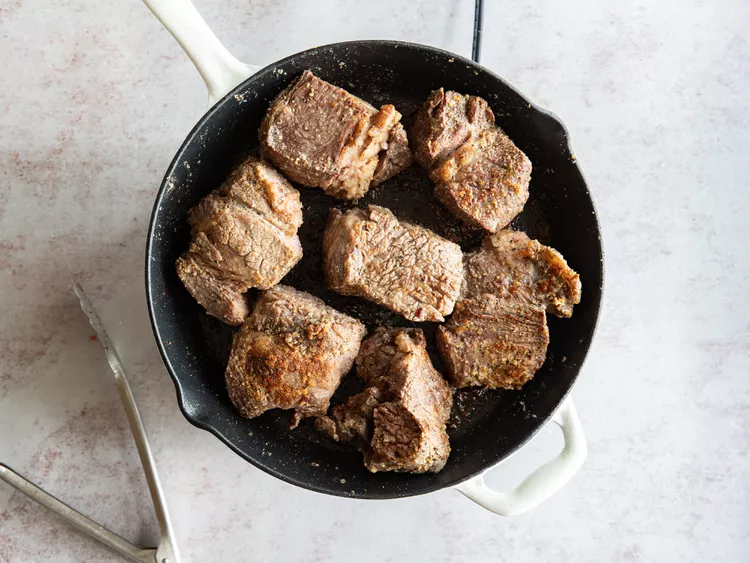
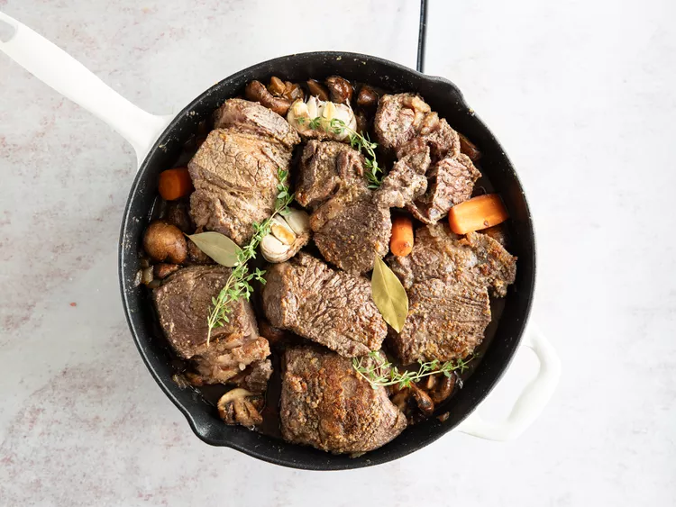
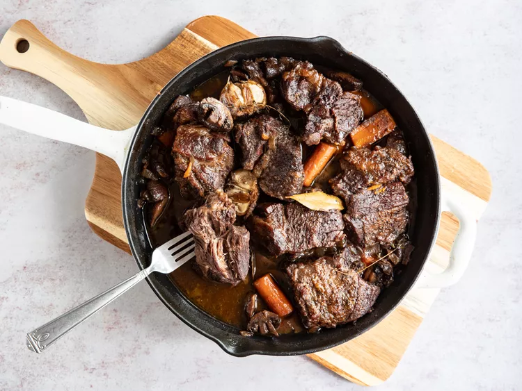

Braised Beef

Description
An elavated verson of homestyle pot roast, this braised beef is hearty and full of earthly riches.
It would pair well with mashed potatoes, buttery noodles, or crusty bread.
Ingredients
- 3 pounds boneless beef chuck roast
- 5 teaspoon kosher salt, divided
- 2 teaspoon freshly ground black pepper, divided
- 2 teaspoon garlic powder
- 4 teaspoon olive oil
- 2 table spoon butter
- 1 mediun onion, chopped
- 1 pound crimini mushrooms, halved
- 3 medium carrot, cut into 2 inche pieces
- 1 head garlic, cut in half lenghtwise
- 1 cup red wine
- 3 sprigs thyme
- 2 bay leaves
- 2 teaspoons Worcestershire
- 2 cups beef broth, or more as needed
- 2 tablespoons chopped fresh parsley
Steps
- Gather all ingredients and proheat the oven to
350 degrees F (175 degrees c).

- Season beef pieces evenly on all sides with 31/2 teaspoons salt,
2 teaspoon pepper, garlic powder

- Heat oil in large skillet over high heat.Add beef, reduce heat to
meduim high and cook, undisturbed until
it releases easily from the skillset and a golden brown cust has formed,
about four minutes.Flip pieces and
continue and continue to cook until browned on all sides.Remove meat from
the pan and set aside.

- Return skillet to medium-high heat and add 2 tablespoons butter to the
drippings in the pan. When butter has
melted add onion, mushrooms and carrots and cook 5 minutes, stirring often,
scraping to release any browned bits
from the bottom. Add garlic and cook for 1 minute.

- Stir in wine and scrape to release any more bits from the pan. Return the meat
to the pan, along with any
accumulated juices and add thyme, bay leaves and Worcestershire.

- Pour in beef broth just enough that it comes up 2/3 of the way up on
the beef (do
not fully submerge the meat
in liquid). Bring the mixture to a simmer.

- Cover and place in preheated oven until meat is very tender, 2 to 2 1/2 hours.

- Serve and enjoy.